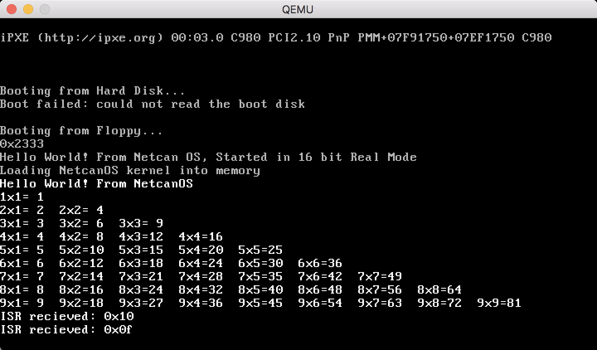
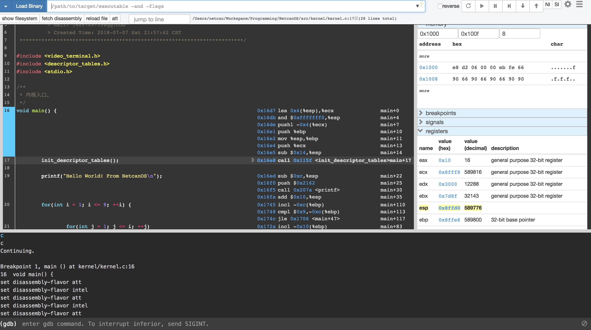

在前几天生日之际，趁着心血来潮，打算实现一个操作系统，算是实现大学毕业的最后一个目标了，在入职的前的火车上，记录下来这几天的工作。
目前实现的部分有：
- 从 BIOS 启动 Bootloader
- 在 Bootloader 中利用中断来调用 BIOS 提供的打印程序、加载磁盘扇区数据程序
- 将 C 语言编写的内核程序加载到内存，Bootloader 从 16 位实模式进入 32 位保护模式
- 执行内核程序
- 实现一些库函数：vsprintf/printf/memcpy/memset
- 重置 GDT 段表和 IDT 中断向量表。
项目地址：https://github.com/netcan/NetcanOS
实现一个操作系统只是为了加深自己的基础，所以我使用了模拟器 qemu/bochs 来仿真 x86 环境。（写到 U 盘拿到真机上试了一下，并未启动起来 = = 后面有时间再试试吧）

Bootloader
计算机启动的时候，首先启动 BIOS 程序进行自检，然后将磁盘的启动扇区 (512 字节) 加载到内存 0x7c00 位置，没问题后会跳转到内存 0x7c00 位置执行指令。 所以在用 C 语言编写内核之前，首先需要用汇编实现 Bootloader 让 BIOS 运行，再将内核程序加载到内存执行。
至于启动扇区，BIOS 很简单的判断，就是扇区最后两个字节是否为 0xaa55。与此同时，BIOS 还提供了一些中断处理程序供调用，例如int 0x10 触发打印字符的中断，int 0x13触发读取扇区的中断。
需要注意一点的是，由于历史原因，在 Bootloader 中，CPU 处于 16 位实模式，而后面要是想调用 C 语言编写的内核，那么需要切换到 32 位保护模式，在 32 位保护模式下，BIOS 将失效，也就是无法使用 BIOS 提供的功能了，所以进入 32 位保护模式之前，需要关中断（BIOS 的中断也没用了），设置 GDT 段表，然后告诉 CPU 段表的位置，设置 cr0 寄存器进入保护模式，最后 jump far（处理掉 CPU 流水线残留的任务）到内核代码处。
实模式 vs 保护模式
32 位保护模式相对于 16 位实模式来说，不同点有：
- 寄存器宽度从 16 位扩展到 32 位
- 增加了几个通用段寄存器，
fs和gs - 内存地址扩展到 32 位，能够寻址 4G 内存空间
- 在内存管理方面，也有很大不同
- 代码有权限，能够设置 ring 0-3 四种级别
- CPU 实现了虚拟内存技术
还有一个不同的是，在实模式下，内存地址计算为(段寄存器 * 0x10 + 偏移量)，而在保护模式下，段寄存器为 GDT 表的索引，索引指向的元素包含了该段的基址。
驱动程序
在实模式下，可以直接触发 0x10 中断来打印一个个字符，而在保护模式下，由于显示设备映射到内存，可以通过对显存（位于0xb8000）写，来显示一个字符。显示设备有控制端口、数据端口，通过它们可以获取当前光标的位置，从而实现滚屏。
重置 GDT 表
虽然在 Bootloader 中已经设置过 GDT 段表了，考虑代码除了内核态运行，还有用户态，所以实现了一下设置 GDT 段表的函数（位于 descriptor_tables.c:init_gdt），增加了两个段：
- NULL 段（必须）
- 内核态代码段
- 内核态数据段
- 用户模式代码段
- 用户模式数据段
设置 IDT 表
CPU 一共能处理 256 种中断，保留了前 32 种系统中断（ISR）。需要定义一个 IDT 表，存放这些中断的信息，例如中断向量（中断处理程序地址），中断属性。而系统保留的 32 种中断中，有些中断会将错误码入栈，有些不会，为了统一栈结构，所以定义这 32 种中断处理程序的时候，不会入栈错误码的那些中断手动 push 一个数据，然后交给 C 语言版本的 isr_handler 统一处理这些中断，根据不同的中断码来辨别不同的中断，还需要在汇编程序 push 一个中断号。
栈 push/pop
栈结构在 x86 中非常重要，毕竟寄存器数量有限，所以需要将一些数据暂存到栈中来腾出空间。同时在函数调用中，C 语言使用栈来传递参数。每个栈元素大小都是固定为一个机器字长，所以在后面 C 调用汇编程序的时候，直接读取栈内容，就能获取参数，非常方便。例如在中断处理程序中，中断程序执行前会将寄存器入栈以保存环境，同时调用 isr_handler，利用这个特性就能在 C 语言 isr_handler 函数中轻而易举地获取中断程序保存的寄存器信息。
交叉编译器
由于我的开发环境是 Mac OSX，内置的 llvm 编译器无法正常工作（例如链接器无法生成纯二进制文件，也没有 binutils 提供 objcopy 等方便工具）。所以需要用 brew 安装 gcc 编译器，接着下载 gcc/gdb/binutils 源码包，用 brew 的 gcc 编译它们(i386 版本)，然后安装。
调试
对于 OS 开发，调试也是一件非常重要的事情，不然出现什么问题都很难定位了。在编译内核代码的时候，通过 -g 选项将符号信息包含进 elf 文件中，最后利用 objcopy 从 elf 文件抽出存二进制文件，然后让 qemu 运行 OS，配合 gdb 就能调试了，下图为我采用 gdbgui 调试的情况：

曾经我分别生成带符号的 elf 内核文件，和生成存二进制内核文件，后来调试的时候发现全局变量地址不对，一度怀疑是 ld 把符号信息搞错了，后来查资料发现，正确调试姿势是，用 objcopy 从带符号信息的 elf 文件中抽出纯二进制文件。